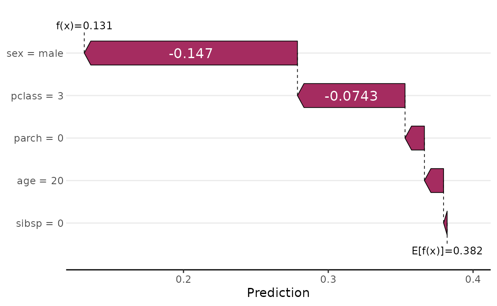
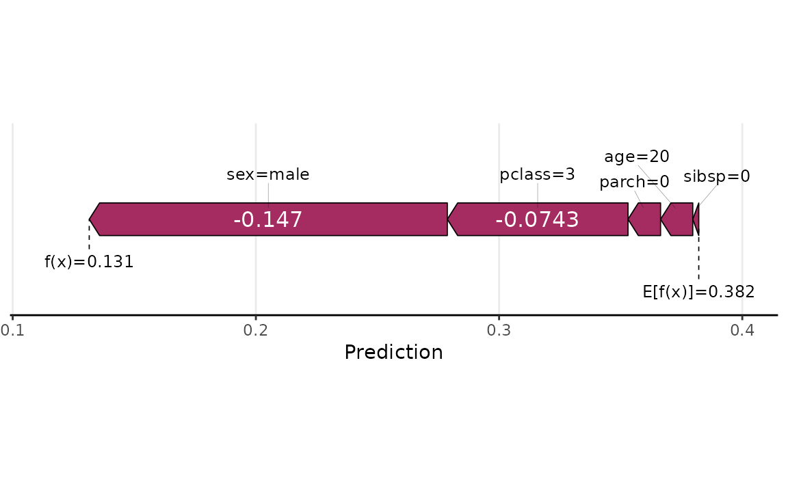
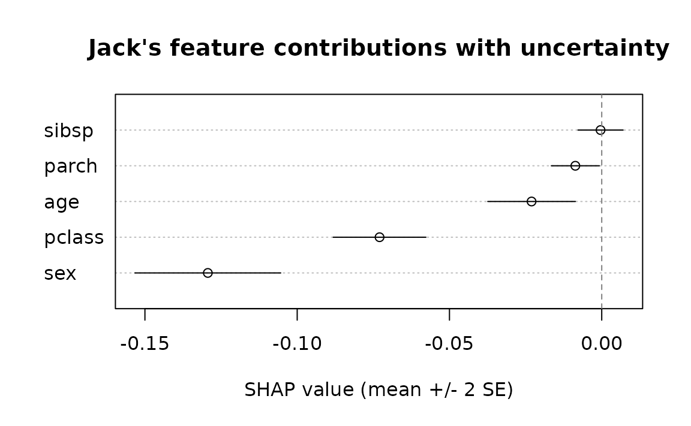
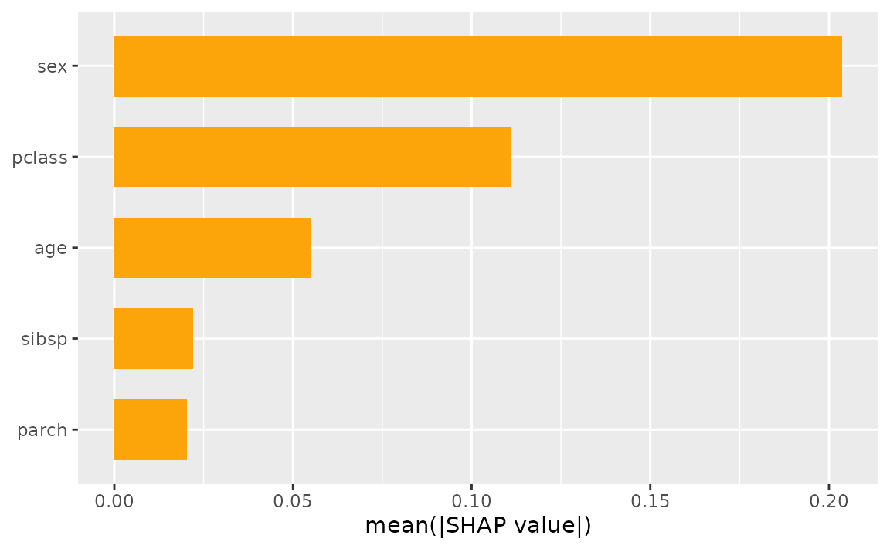
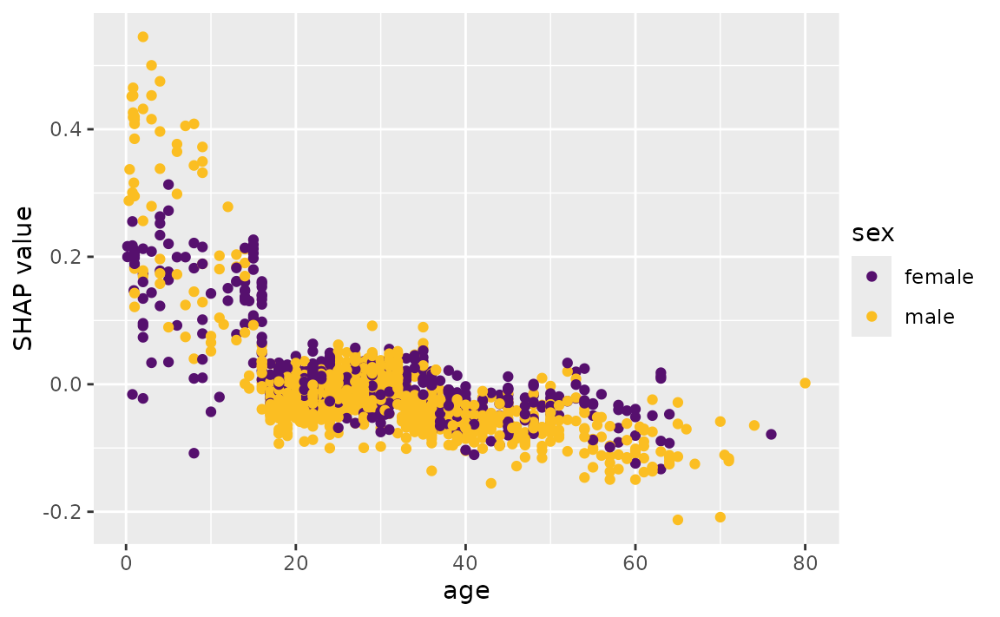
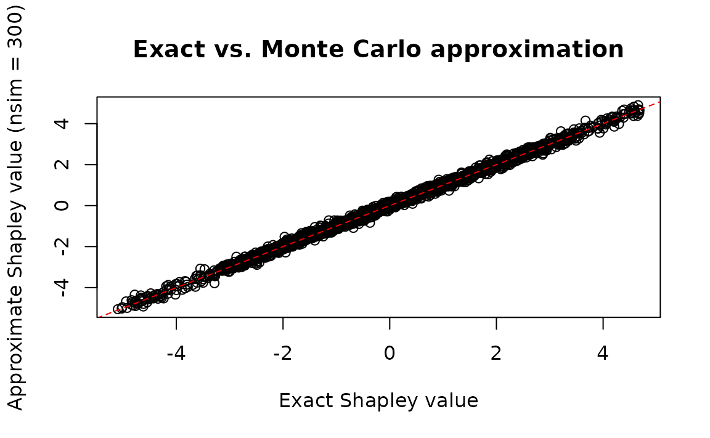

In this vignette, we’ll cover basic usage of fastshap for computing feature contributions for both local and global explanations, verify the Monte Carlo approximation against exact Shapley values, and show how to visualize the output using the shapviz package. To start, we’ll use the ranger package to build a random forest to predict (and explain) survivability of passengers on the ill-fated Titanic.
The source data (also
available in fastshap::titanic) contains 263 missing values
(i.e., NA’s) in the age column. The
titanic_mice version, which we’ll use in this vignette,
contains imputed values for the age column using multivariate
imputation by chained equations via the mice package.
Consequently, titanic_mice is a list containing 11 imputed
versions of the original data; see ?fastshap::titanic_mice
for details. For now, we’ll just use one of the 11 imputed versions:
## survived pclass age sex sibsp parch
## 1 yes 1 29.00 female 0 0
## 2 yes 1 0.92 male 1 2
## 3 no 1 2.00 female 1 2
## 4 no 1 30.00 male 1 2
## 5 no 1 25.00 female 1 2
## 6 yes 1 48.00 male 0 0
t1$pclass <- as.ordered(t1$pclass) # makes more sense as an ordered factorNext, we’ll build a default probability forest which uses the Brier score to determine splits.
library(ranger)
set.seed(2053) # for reproducibility
(rfo <- ranger(survived ~ ., data = t1, probability = TRUE))## Ranger result
##
## Call:
## ranger(survived ~ ., data = t1, probability = TRUE)
##
## Type: Probability estimation
## Number of trees: 500
## Sample size: 1309
## Number of independent variables: 5
## Mtry: 2
## Target node size: 10
## Variable importance mode: none
## Splitrule: gini
## OOB prediction error (Brier s.): 0.1337358Local explanations
To illustrate the simplest use of Shapley values for quantifying feature contributions, we need an observation to predict. While we can use any observation from the training set, we’ll construct an observation for a new passenger. Everyone, meet Jack:
jack.dawson <- data.frame(
#survived = 0L, # in case you haven't seen the movie
pclass = 3L, # third-class passenger
age = 20.0, # twenty years old
sex = factor("male", levels = c("female", "male")), # male
sibsp = 0L, # no siblings/spouses aboard
parch = 0L # no parents/children aboard
)Note that fastshap, like
many other machine
learning interpretability packages (e.g., iml), requires a
user-specified prediction wrapper; that is, a simple function that tells
fastshap how to
extract the appropriate predictions from the fitted model. In this case,
we want to explain Jack’s likelihood of survival, so our prediction
wrapper1
needs to return the conditional probability of surviving from a fitted
ranger object;
see ?ranger::predict.ranger for details:
pfun <- function(object, newdata) { # prediction wrapper
unname(predict(object, data = newdata)$predictions[, "yes"])
}
# Compute Jack's predicted likelihood of survival
(jack.prob <- pfun(rfo, newdata = jack.dawson))## [1] 0.1314723
# Average prediction across all passengers
(baseline <- mean(pfun(rfo, newdata = t1)))## [1] 0.3821045
# Difference between Jack and average
(difference <- jack.prob - baseline)## [1] -0.2506322Yikes, Jack isn’t predicted to have fared too well on this voyage, at least compared to the baseline (i.e., average training prediction)! Can we try to understand why Jack’s predicted likelihood of survival is so much smaller than the average? Of course, this is the difference Shapley-based feature contributions help to explain.
To illustrate, we’ll use the explain() function to
estimate how each of Jack’s features (i.e., his age and sex) contributed
to the difference2:
X <- subset(t1, select = -survived) # features only
set.seed(2113) # for reproducibility
(ex.jack <- explain(rfo, X = X, pred_wrapper = pfun, newdata = jack.dawson,
nsim = 300))## pclass age sex sibsp parch
## [1,] -0.06927731 -0.03321149 -0.1386586 0.006124086 -0.01045127
## attr(,"baseline")
## [1] NA
## attr(,"class")
## [1] "explain" "matrix" "array"The fastshap
package uses an efficient version of the Monte Carlo (MC) algorithm
described in Strumbelj and Kononenko (2014). Consequently, for stability
and accuracy, the feature contributions should be computed many times
and the results averaged together; as of version 0.2.0,
explain() batches these repetitions into a small number of
(large) prediction calls, so increasing nsim is far cheaper
than it used to be.
Note that the MC approach used by fastshap (and
other packages) will not produce Shapley-based feature contributions
that satisfy the efficiency
property; that is, they won’t add up to the difference between the
corresponding prediction and baseline. However, borrowing a trick from
the popular Python shap
library, we can use a regression-based adjustment to correct the sum. To
do this, simply set adjust = TRUE in the call to
explain()3:
set.seed(2133) # for reproducibility
(ex.jack.adj <- explain(rfo, X = X, pred_wrapper = pfun, newdata = jack.dawson,
nsim = 300, adjust = TRUE))## pclass age sex sibsp parch
## [1,] -0.07429336 -0.01323978 -0.1472409 -0.002466615 -0.01339153
## attr(,"baseline")
## [1] 0.3821045
## attr(,"class")
## [1] "explain" "matrix" "array"
# Sanity check
sum(ex.jack.adj)## [1] -0.2506322
difference## [1] -0.2506322Next, we can use the shapviz package to produce several useful visualizations for either a vector or matrix of Shapley values. Below, we create a simple waterfall chart to visualize how Jack’s features contributed to his relatively low predicted probability of surviving:
library(shapviz)
shv <- shapviz(ex.jack.adj, X = jack.dawson, baseline = baseline)
sv_waterfall(shv)
Clearly, the fact that Jack was a male, third-class passenger contributed the most to pushing his predicted probability of survival down below the baseline. Force plots are another popular way to visualize Shapley values for explaining a single prediction:
sv_force(shv)
Raw Shapley values and Monte Carlo uncertainty
By default, explain() returns the averaged Shapley
values across all Monte Carlo simulations. Setting
raw = TRUE gives you the full per-simulation results as a
3-D array of dimensions n x p x nsim (observations x
features x simulations). This is useful for quantifying Monte Carlo (MC)
uncertainty: once you have the raw draws, the MC standard error of each
Shapley estimate is just an apply() away.
set.seed(2140) # for reproducibility
raw.jack <- explain(rfo, X = X, pred_wrapper = pfun, newdata = jack.dawson,
nsim = 300, raw = TRUE)
dim(raw.jack) # 1 observation x 5 features x 300 simulations## [1] 1 5 300Compute the mean and standard error across the simulations for each feature, then produce a simple dot-and-whisker plot (mean +/- 2 SE) with base graphics:
shap.mean <- apply(raw.jack, 1:2, mean) # same as plain explain() output
shap.se <- apply(raw.jack, 1:2, sd) / sqrt(dim(raw.jack)[3L])
feature.order <- order(shap.mean)
xlim <- range(c(shap.mean - 2 * shap.se, shap.mean + 2 * shap.se))
dotchart(as.numeric(shap.mean)[feature.order],
labels = colnames(shap.mean)[feature.order],
xlim = xlim, xlab = "SHAP value (mean +/- 2 SE)",
main = "Jack's feature contributions with uncertainty")
abline(v = 0, lty = 2, col = "grey50")
segments(
x0 = (shap.mean - 2 * shap.se)[1L, feature.order],
x1 = (shap.mean + 2 * shap.se)[1L, feature.order],
y0 = seq_along(feature.order)
)
With 300 simulations all five features are estimated fairly precisely
— the narrow MC error bars suggest the algorithm has largely converged.
Features with larger absolute contributions (sex,
pclass) carry proportionally more per-simulation variance,
but dividing by
keeps the standard error small at this sample size.
Global explanations
Aside from explaining an individual prediction (i.e., local explanation), it can be useful to aggregate the results of several (i.e., all of the training predictions) into an overall global summary about the model (i.e., global explanation). The code chunk below computes Shapley explanations for each passenger in the training data:
set.seed(2224) # for reproducibility
ex.t1 <- explain(rfo, X = X, pred_wrapper = pfun, nsim = 30, adjust = TRUE,
shap_only = FALSE)
round(head(ex.t1$shapley_values), 3)## pclass age sex sibsp parch
## [1,] 0.209 0.046 0.316 0.000 -0.010
## [2,] 0.101 0.316 -0.036 0.011 0.087
## [3,] 0.170 0.092 0.060 -0.026 -0.045
## [4,] 0.197 -0.029 -0.183 0.020 0.029
## [5,] 0.187 -0.025 0.295 -0.016 -0.041
## [6,] 0.157 -0.032 -0.174 -0.016 -0.008Note that we set the optional argument shap_only = FALSE
here. This is a convenience argument when working with shapviz; in short,
setting this to FALSE returns a list containing the Shapley
values, feature values, and baseline (all of which can be used by shapviz’s plotting
functions).
A common global measure computed from Shapley values is the Shapley-based feature importance score, which is nothing more than the mean of the absolute value of the feature’s contribution across observations:
shv.global <- shapviz(ex.t1)
sv_importance(shv.global)
Another common global visualization is the Shapley dependence plot,
akin to a partial
dependence plot. Here, we’ll look at the dependence of the
feature contribution of age on its input value:
sv_dependence(shv.global, v = "age")
Exact vs. approximate Shapley values
For linear models, xgboost, and lightgbm models,
explain() can also compute exact Shapley values
(exact = TRUE) instead of the Monte Carlo approximation.
This is a useful way to sanity check the approximation: with enough
simulations, the two should agree closely. We’ll use the Friedman 1
benchmark data (gen_friedman()) and a plain linear model,
whose features are independent by construction:
set.seed(101)
trn <- gen_friedman(500) # 10 features, only 5 of which matter
X.friedman <- subset(trn, select = -y)
fit.lm <- lm(y ~ ., data = trn)
pfun.lm <- function(object, newdata) predict(object, newdata = newdata)
ex.exact <- explain(fit.lm, X = X.friedman, exact = TRUE)
set.seed(102)
ex.approx <- explain(fit.lm, X = X.friedman, pred_wrapper = pfun.lm, nsim = 300)
plot(as.numeric(ex.exact), as.numeric(ex.approx),
xlab = "Exact Shapley value", ylab = "Approximate Shapley value (nsim = 300)",
main = "Exact vs. Monte Carlo approximation")
abline(0, 1, col = "red2", lty = 2)
cor(as.numeric(ex.exact), as.numeric(ex.approx))## [1] 0.9983586As expected, the Monte Carlo approximation tracks the exact Shapley values closely.
Main, total, and interaction effects
The Friedman 1 benchmark also bakes in a real pairwise interaction
between x1 and x2
(10 * sin(pi * x1 * x2)). While explain()
estimates Shapley values by averaging over randomly sampled
coalitions, explain_effects() decomposes each feature’s
contribution into a main effect (its effect in isolation —
equivalent to the centered partial dependence of that feature), a
total effect (main effect plus every interaction it
participates in), and the gap between them (interaction),
using only the two highest-weight coalitions. By default this involves
no Monte Carlo simulation at all: it averages over the entire background
data set.
We’ll fit a multivariate adaptive regression spline (earth) with
degree = 2 so the fitted model can actually capture the
x1:x2 interaction:
library(earth)
fit.mars <- earth(y ~ ., data = trn, degree = 2)
pfun.mars <- function(object, newdata) predict(object, newdata = newdata)[, 1L]
eff <- explain_effects(fit.mars, X = X.friedman, pred_wrapper = pfun.mars)
# Mean absolute interaction strength per feature
round(colMeans(abs(eff$interaction)), 3)## x1 x2 x3 x4 x5 x6 x7 x8 x9 x10
## 1.064 1.064 0.000 0.000 0.000 0.000 0.000 0.000 0.000 0.000The interaction diagnostic correctly flags x1 and
x2 as the only features with meaningful interaction content
— exactly the pair baked into the Friedman 1 formula — while
x3-x10 show essentially none.
Parallel processing
The explain() function computes Shapley values one
feature at a time, batching all Monte Carlo repetitions for that feature
into a couple of prediction calls. If you have a lot of features and an
expensive pred_wrapper, it may still be beneficial to run
explain() in parallel across features. Setting
parallel = TRUE uses foreach to loop
through features, so you can use any parallel backend it supports (this
requires the foreach package to be installed).
We use makeCluster() + registerDoParallel()
here because it works on all platforms (including Windows). Note the
.packages = "ranger" argument: on socket-based clusters
(the default on Windows), worker processes don’t inherit packages loaded
in the main session, so any packages needed by the prediction wrapper
must be declared explicitly via ..., which
explain() forwards to foreach() (fastshap’s
own namespace is always added to .packages automatically).
If fastshap (or ranger) is installed somewhere other than the default
library path — as happens, for instance, when building this vignette
from a development checkout — the workers also need to be told where to
look via .libPaths():
library(doParallel)
cl <- makeCluster(2L) # adjust to the number of cores available on your machine
invisible(clusterCall(cl, function(lp) .libPaths(lp), .libPaths()))
registerDoParallel(cl)
set.seed(5038)
ex.par <- explain(rfo, X = X, pred_wrapper = pfun, nsim = 30,
adjust = TRUE, parallel = TRUE, .packages = "ranger")
stopCluster(cl)
# Results are consistent with the sequential run above
cor(as.numeric(ex.par), as.numeric(ex.t1$shapley_values))## [1] 0.9670876